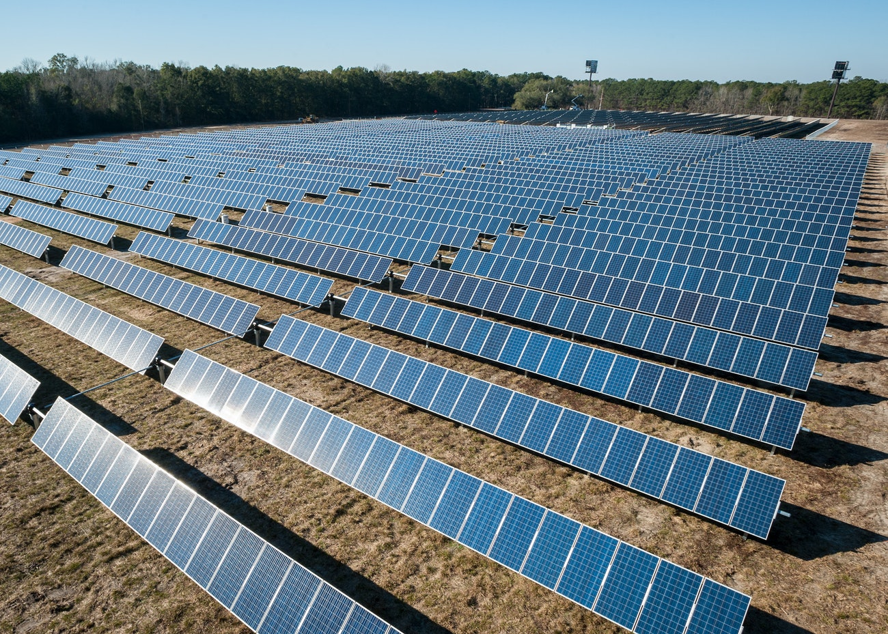
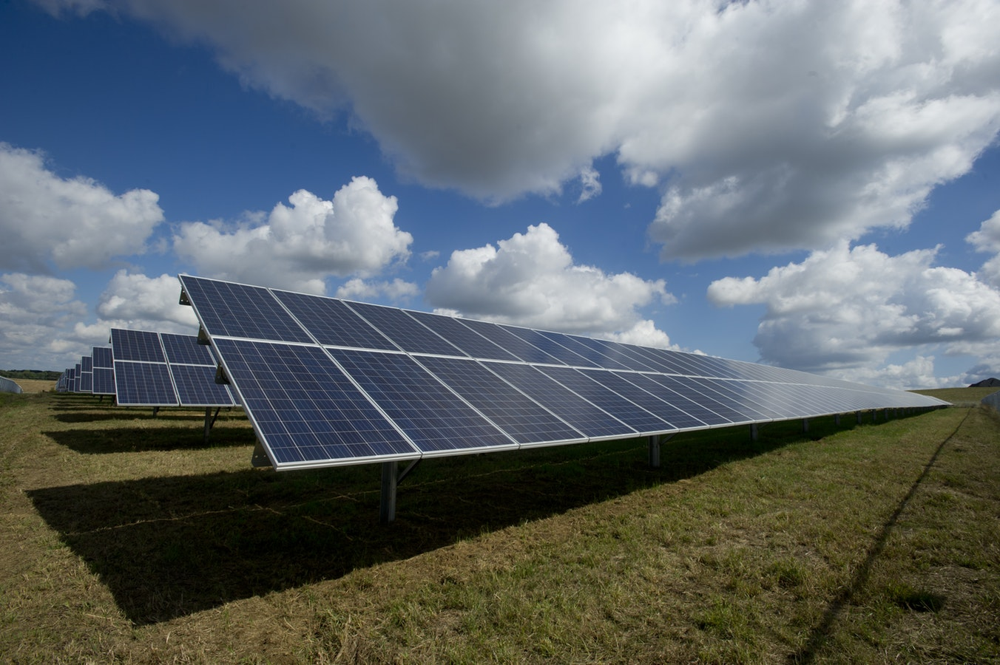
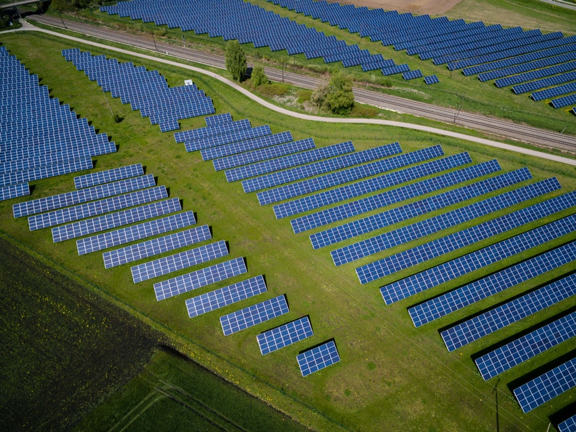

Солнечные электростанции

Солнечная энергия – это преобразование энергии от солнечного света в электричество, либо
непосредственно с использованием фотоэлектричества (PV), косвенно использующего концентрированную
солнечную энергию, либо комбинацию.
Коммерческие концентрированные солнечные электростанции были впервые разработаны в 1980-х годах.
Солнечные электростанции становятся быстрой недорогой низкоуглеродной технологией для использования
возобновляемой энергии от солнца.
Солнечный элемент или фотогальваническая ячейка (PV) – это устройство, которое преобразует свет в электрический ток с использованием фотовольтаического эффекта.

Массив фотоэлектрической системы питания или системы PV создает мощность постоянного тока (DC), которая колеблется от интенсивности солнечного света. Для практического использования обычно требуется преобразование в определенные требуемые напряжения или переменный ток (AC) с помощью инверторов. Солнечные фотомодули соединенные вместе формируют массив и связываются с инвертором, который производит мощность при желаемом напряжении, а для переменного тока – желаемую частоту / фазу.
Солнечные электростанции имеют ряд преимуществ среди альтернативных источников энергии:
- Основным преимуществом является экологическая чистота солнечной энергии. И хотя соединения кремния, которые входят в состав солнечных модулей могут нанести небольшой вред природе, в сравнении с последствиями сжигания угля, это воздействие ничтожно.
- Длительное использование. Для того чтобы ухаживать за солнечными панелями не нужно особых знаний, поэтому они находят применение в быту, и промышленности. Эксплуатационный срок в среднем составляет около 25 лет.
- Несколько квадратных метров панелей, смогут обеспечить необходимым количеством энергии небольшую деревню. Страны, где в году больше преобладают солнечная погода, устанавливают полноценные солнечные электростанции.
- Современные конструкции, не так дороги как их предшественники, поэтому позволить их себе установить может каждый, тем более что уже в течении 5 – 10 лет, они полностью окупаются.
- Еще одним преимуществом солнечных батарей является экономичность (если установить батарею на крыше частного дома, в летний период вам вообще не придется платить за электричество). Достаточное количество энергии они дают начиная с мая по октябрь.
- Постоянство. Солнце - это неисчерпаемый ресурс, и хотя в облачный, зимний или дождливый день количество энергии снижается, от человеческого фактора поступление энергии не будет зависеть.
- Автономность. Вам не придется думать о том, что электричество может в любой момент отключится, так как панели работают автономно, и не зависят от технических неполадок.
- Вариативность. Современные конструкции позволяют изменять конфигурацию панели, так как удобно вам. Если вам потребуется добавить мощность, существующую конструкцию можно будет легко дополнить новыми элементами.
- Для их работы нет необходимости применять топливо, а это также существенная экономия.
- В отличии от такого альтернативного источника энергии как ветровые системы, работа солнечных батарей не сопровождается шумом.

Такая система может быть подключена к сети везде, где это возможно. Также, такая система может работать автономно, но с учетом активности только в светлую пору, такие системы дополняют накопительными элементами – аккумуляторами, либо монтируют в связке с другими энергогенерирующими приспособлениями – ветро-генераторами, дизель-генераторами, и т.д..